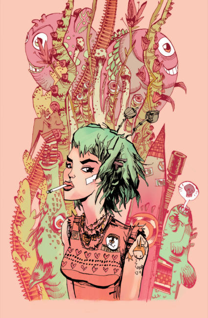
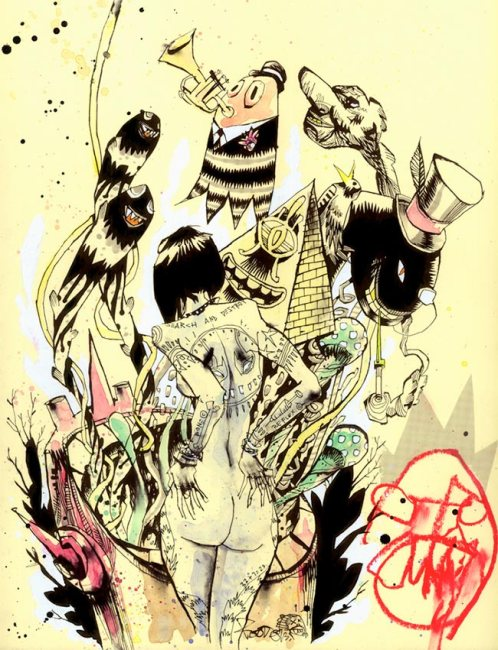
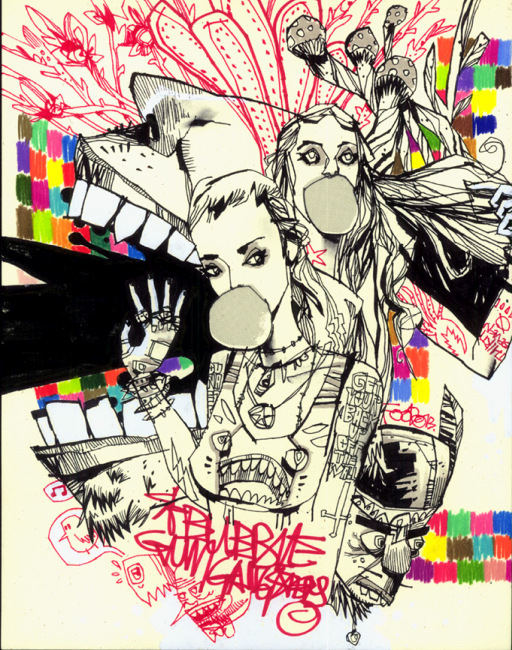
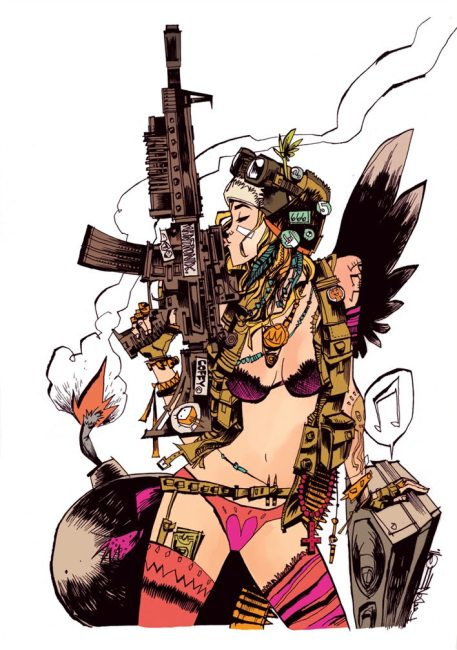
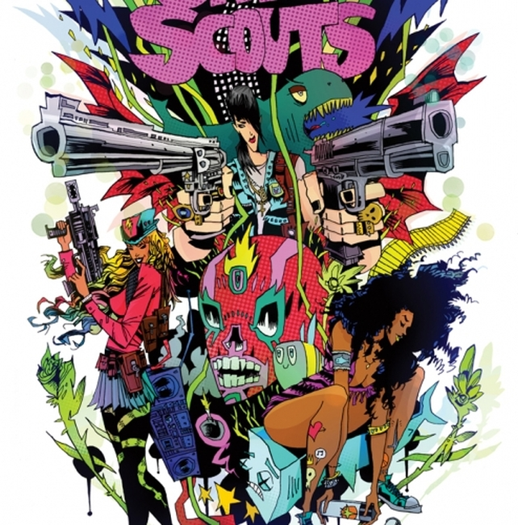
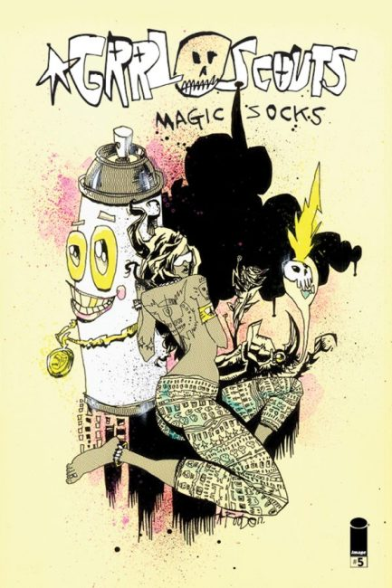
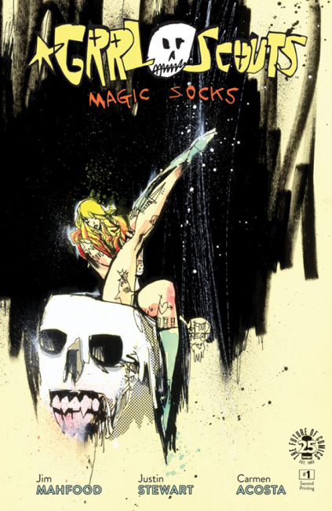
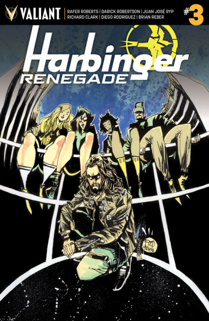
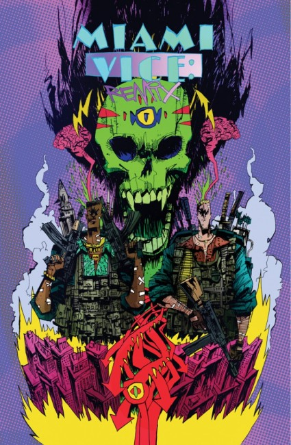

×








❮
❯
Jim Mahfood (1975), a.k.a. Food One, is an American comic book creator.
Apart from his creator-owned comic book series Grrl Scouts and his comic strip Stupid Comics (which appears weekly in the Phoenix New Times) he also did work for Marvel Comics on various Spider-Man titles, including Ultimate Marvel Team-Up and Spectacular Spider-Man.
His big break came when Oni Press hired him to illustrate two comic books based on Kevin Smith's movie Clerks from scripts by Smith, following his work on Marvel Comics Generation X Underground Special.
Titles
Clerks (written by Kevin Smith)
Clerks Holiday Special (written by Kevin Smith)
Grrl Scouts
Grrl Scouts: Work Sucks
40 Oz Collected
Classic 40 oz: Tales from the brown bag
Bad Ideas (collaboration with Wayne Chinsang and Dave Crosland)
Putting the Backbone Back
Felt: True tales of underground hip hop
The Further Adventures of One Page Filler Man
Carl, The Cat That Makes Peanut Butter Sandwiches
Mixtape Art Book (3 Volumes)
You Only Live Twice: The Audio Graphic Novel by MF Grimm (artwork and 13-page comic book)
Jennifer's Body (graphic novel)
Kickpuncher by Troy Barnes (as illustrator)
Side B: The Music Lover's Graphic Novel (anthology contribution, published by Poseur Ink in 2009)
Marijuana Man (collaboration with Ziggy Marley and Joe Casey)
Everybody Loves Tank Girl (2012)